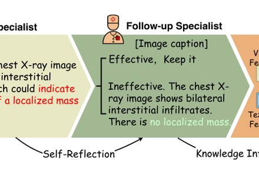
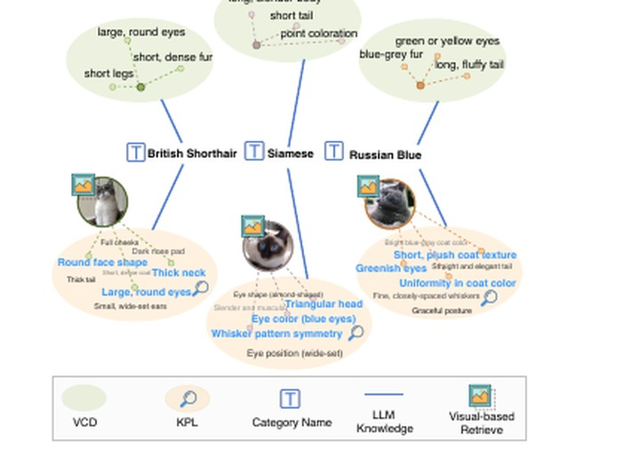
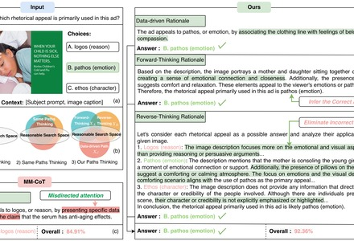
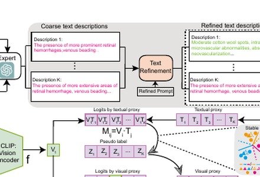
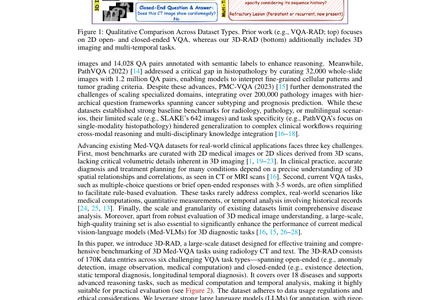
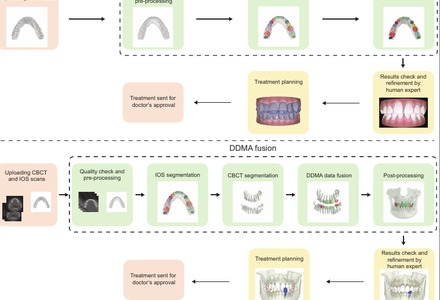
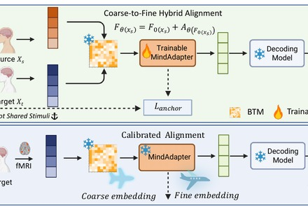
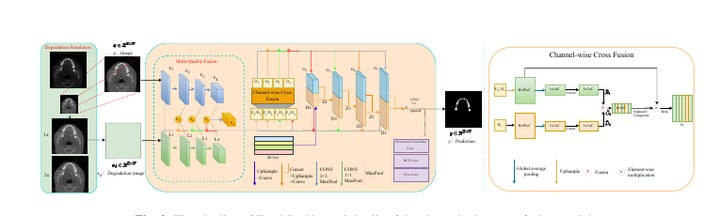

JIAXIANG LIU
👨💻 Profile
I am currently a Postdoctoral Researcher at the
Guangdong Institute of Intelligence Science and Technology (GDIIST),
working with Prof. Luping Shi (Tsinghua University).
I received my Ph.D. in June 2025 from Zhejiang University, under the supervision of
Prof. Zuozhu Liu.
Before that, I was a Visiting Student at A*STAR Singapore (Sep 2023–Sep 2024) with
Prof. Joey Tianyi Zhou
and Dr. Jiawei Du.
My research interests lie in trustworthy multimodal AI for medicine, with a focus on
medical vision–language reasoning,
chain-of-thought for VQA,
adversarial robustness of CLIP,
and emerging work on brain decoding.
My work has appeared in Cell Press Patterns, Nature Communications, ICML, NeurIPS, AAAI, EMNLP, KDD, MICCAI, ACL, and IEEE TCSVT / TMM / TIM / TETCI.
I am also looking for self-motivated research interns and visiting students. We provide abundant GPU compute and dedicated research mentorship. Drop me an email if you are interested!
📰 News
2026.6
📌 Our work "IFCoT: Insights Fusion Chain of Thought for Multimodal Reasoning in LLMs" is accepted by IEEE TCSVT.
2026.5
📌 Our work "MindAdapter: Few-Shot Parameter-Efficient Residual Calibration of Cross-Subject Brain-to-Visual Decoding Models" is accepted by
KDD 2026 (AI4Sciences track)!
Project
2026.4
📌 Our work "Self-Calibrated Consistency can Fight Back for Adversarial Robustness in Vision–Language Models" (SCC) is accepted by
ICML 2026!
Paper
2026.1
📌 Serving as a reviewer for ICML 2026 (Silver Tier).
2025.8
📌 Joined GDIIST as a Postdoctoral Researcher, advised by Prof. Luping Shi (Tsinghua University). Looking forward to building trustworthy medical multimodal foundation models 🩺.
2025.6
📌 Successfully defended my Ph.D. dissertation at Zhejiang University 🎓.
2024.12
📌 "Knowledge Proxy Learning (KPL)" selected as
Oral at
AAAI 2025.
Paper
2024.11
📌 "MedCoT: Medical Chain-of-Thought via Hierarchical Expert" selected as
Oral at
EMNLP 2024.
Paper
2024.11
📌 "VPL: Visual Proxy Learning for Zero-Shot Medical Image Classification" is accepted by
EMNLP 2024.
Paper
2024.9
📌 Completed my 1-year visit at A*STAR Singapore (CFAR) as a Visiting Student, working with Prof. Joey Tianyi Zhou and Dr. Jiawei Du 🇸🇬.
📝 Selected Publications
For the full list, please refer to
Google Scholar
or my publications page.
★ denotes my name; * equal contribution; # corresponding author.
Trustworthy VLM Reasoning · 可信视觉–语言模型推理
[ICML 2026]
Self-Calibrated Consistency can Fight Back for Adversarial Robustness in Vision–Language Models.
Jiaxiang Liu, Jiawei Du, Xiao Liu, Shangyang Li, Songchen Ma, Changshuo Wang, Prayag Tiwari, Mingkun Xu.

[EMNLP 2024 Oral]
MedCoT: Medical Chain-of-Thought via Hierarchical Expert.
Jiaxiang Liu, Yuan Wang, Jiawei Du, Joey Tianyi Zhou#, Zuozhu Liu#.

[AAAI 2025 Oral]
Knowledge Proxy Learning: Toward Zero-Shot Vision–Language Mining for Medicine.
Jiaxiang Liu, Tianxiang Hu, Yan Hu, Jiawei Du, Huimin Xiong, Jiang Liu, Joey Tianyi Zhou#, Zuozhu Liu#.

[IEEE TCSVT]
IFCoT: Insights Fusion Chain of Thought for Multimodal Reasoning in LLMs.
Jiaxiang Liu, Jiawei Du, Tianxiang Hu, Linjie Tong, Yan Zhang, Yang Feng, Jian Wu, Joey Tianyi Zhou, Mingkun Xu#, Zuozhu Liu#.
to appear

[EMNLP 2024]
VPL: Visual Proxy Learning for Zero-Shot Medical Image Classification.
Jiaxiang Liu, Tianxiang Hu, Huimin Xiong, Jiawei Du, Yang Feng, Jian Wu, Joey Tianyi Zhou#, Zuozhu Liu#.
Multimodal Medical Image Processing · 多模态医学影像处理

[NeurIPS 2026]
3D-RAD: A Comprehensive 3D Radiology Med-VQA Dataset with Multi-Temporal Analysis and Diverse Diagnostic Tasks.
Xiaotang Gai,
Jiaxiang Liu#, Yu Li, Zijie Meng, Jian Wu, Zuozhu Liu.

[Cell Press Patterns]
Deep Learning-Enabled 3D Multimodal Fusion of Cone-Beam CT and Intraoral Mesh Scans for Clinically Applicable Tooth-Bone Reconstruction.
Jiaxiang Liu, Jin Hao, Hangzheng Lin, Wei Pan, Jianfei Yang, Yang Feng, Gaoang Wang, Jin Li, Zhihe Zhao, Zuozhu Liu.

[KDD 2026]
MindAdapter: Few-Shot Parameter-Efficient Residual Calibration of Cross-Subject Brain-to-Visual Decoding Models.
Jiaxiang Liu, Jiawei Du, Xupeng Chen, Guoqi Li, Jiang Cai, Simon Fong, Mingkun Xu.
IEEE TETCI
(2023)
[IEEE TETCI]
Parameter-Efficient Transfer Learning for Medical Visual Question Answering.
Jiaxiang Liu, Tianxiang Hu, Yan Zhang, Yang Feng, Jin Hao, Junhui Lv, Zuozhu Liu.

[IEEE ISBI 2023]
ToothSegNet: Image Degradation Meets Tooth Segmentation in CBCT Images.
Jiaxiang Liu, Tianxiang Hu, Yang Feng, Wanghui Ding, Zuozhu Liu.